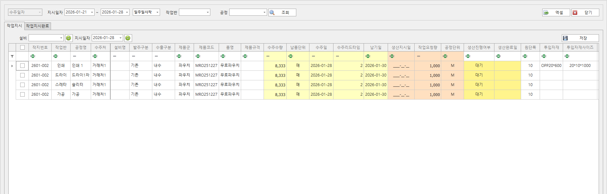
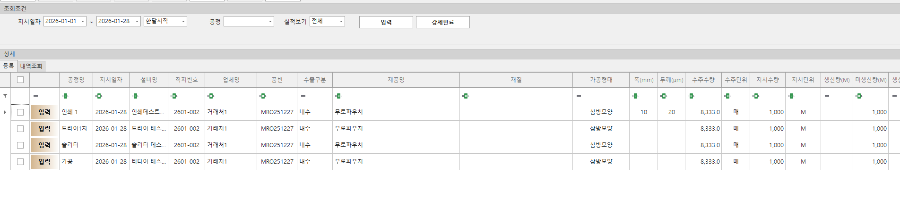
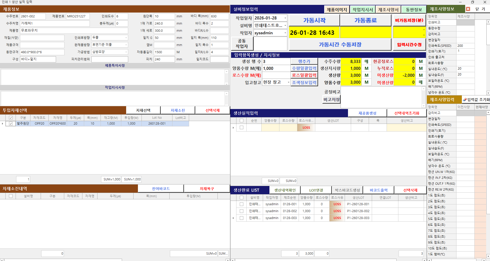
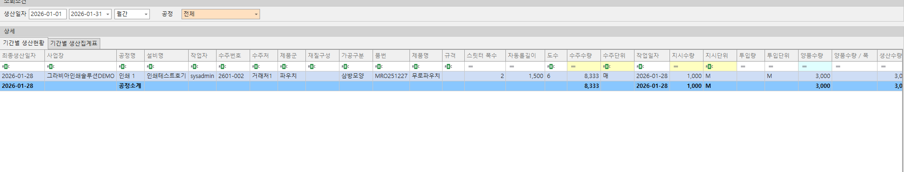
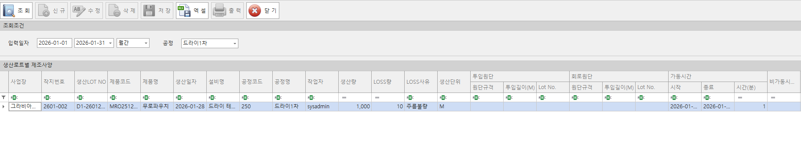

생산 관리
작업지시, 공정 현황, 실적 분석까지 한 흐름으로 연결해 생산 현장의 의사결정을 빠르게 합니다.
생산 관리 화면

수주별 작업지시
- 수주(주문)의 생산 작업을 위해 필요한 작업지시를 관리할 수 있습니다.

생산실적등록
- 작업지시를 기반으로 생산실적을 등록할 수 있는 목록을 표시합니다.
- 작업지시수량에 작업실적 수량이 도달했을 경우 자동으로 작업지시완료로 변경됩니다.

생산실적등록 Pop
- 투입자재를 선택하여 등록할 수 있습니다.
- 생산실적을 일괄 입력할 수 있습니다.
- 제조사양을 등록할 수 있습니다.

생산실적조회
- 기간별 생산현황을 조회 할 수 있습니다.
- 기간별 공정별 생산실적 현황을 조회 할 수 있습니다.

기간별불량내역
- 생산실적에서 등록한 불량내역을 조회 할 수 있습니다.

제조사양내역조회
- 생산 시 등록한 제조사양을 생산로트별, 공정별로 조회 할 수 있습니다.